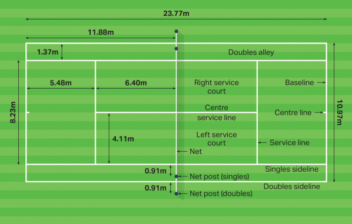
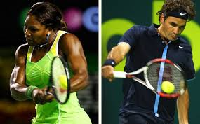

Tennis is a racquet sport that can either involve two players facing off, called singles, or a team of 2 players versus another team of 2 players, called doubles. The tennis court spans roughly 23.77m in length, while the width is dependent on if it is a singles match or doubles: singles will have a width of 8.23m, while doubles will have a width of 10.97m. Each side will alternate serving where they need to aim and place the ball within the opponent's service box. While serving, the player must keep both feet behind the baseline. The player will have two attempts to serve the ball within the service court, and if they fail to do so, they lose a point. After serving, the ball is in play and each side must return the ball to the opponent's side, within the specified lines in order to score a point. A game in tennis is scored in the following manner: 1st point is 15 (15-0), 2nd point is 30 (30-0), and the 3rd point is 40 (40-0). Upon reaching the 4th point, a player will secure the game. However, if each side reaches 3 points each (40-40), then it reaches a state called deuce, and from here, the player will need to score 2 points in a row to secure the game. The first point of a deuce will award the player "advantage" and then if the same player with advantage wins another point, they take the game. If at any point the advantage player loses a point, it goes back to the deuce state.
A match of tennis usually consists of multiple sets. A set is concluded when one player or team reaches 6 games first, and must have at least 2 games over the opponent (for example, 6-3, or 6-4). In the event that an opponent reaches 5 games, the set then requires a player to win 7 games to satisfy the +2 games rule (7-5). In the event that each player reaches 6 games each in a set, the players will play a tiebreak in order to conclude the set. In a tiebreak, rather than having one player serving the entire game, each side will alternate serving similar to how they alternate serving during a set. The tiebreak ends when one side reaches 7 points won, with at least 2 points over the opposing side. Tiebreaks can be extremely long due to the +2 points rule. Whoever wins the tiebreak will win the set with a score of 7 games to 6 games in the set. To win a match of tennis, a player will usually have to win 2-3 sets (Professional men's tour play a best of 5, while the professional women's tour plays a best of 3).
Tennis is a sport that can be enjoyed by people of all skill-levels. Starting out, playing tennis casually is a good way to get a simple workout in, but if you ever wanted to take the sport to the next level, it will help an individual maintain an all around fit body. It is a sport that requires hand-eye coordination. Because a person is continuously running back and forth, it will help improve a person's cardiovascular system. The overall nature of tennis will help a person improve their flexibility. It is a sport that keeps a person on their toes. You need to be able to react quickly to the ball and formulate a plan in your head on how to win the next point.
I am John and I have over 14 years of experience playing tennis. Although I only started playing tennis when I reached my senior year of high school, I learned quickly and was able to secure a spot playing on the varsity team. Since then, I have been continuously learning and improving. Ultimately, I am here to pass on my skill and experience. Whether you are just a beginner hoping to get started playing tennis or you're already a veteran looking to take your game to the next level, I believe I have the resources and experience to help you achieve your goals. I have training plans available that I can pare and tailor to your individual needs after a short consultation, free of charge! I offer both private lessons, one on one, or group lessons if you prefer to bring along a friend.
My name is John and I am currently serving Active Duty in the United States Air Force. I am currently stationed overseas in Japan. I initially signed a four year contract and intended to use the GI Bill to return to school. However, halfway through my contract, I was notified of a short tour assignment to Turkey with a follow-on assignment to Japan after. I thought to myself there probably wouldn't be another opportunity for myself to experience and live in Japan, so I decided to jump on the opportunity. Upon accepting the assignment, I had to extend my initial contract out another two and half years (about 30 months).
Being stationed overseas, I currently attend Southwestern College online. I am majoring in Computer Science and will have about five classes remaining after I complete the current semester. Upon completing my undergraduate degree in CS, I am looking to apply for a medical school preparatory program in which I can study full time for two years, completing all the prerequisite courses for medical school, all the while still being paid as if I'm Active Duty. Upon completion of the program and acceptance to medical school (either private or the Uniformed Services University of the Health Sciences), I would be able to commission and continue serving as an officer and physician. This is my end goal.
The forehand is one of the most important weapons a player can develop. Most people are comfortable using their forehands for most shots because they are using their dominant hand to hit the ball. See below for some quick instructions on how to hit a forehand!
 Another tool in a player's kit is the backhand. A backhand may feel more awkward for a player at first since it requires the use of two hands. However, once a player becomes more experienced, they may transition to a one-handed backhand.
Before any forehands or backhands can be hit, a ball must be served. Serving the ball is when the player has their foot behind the baseline and hits the ball over to the opposite service court. Traditionally, the serve is hit with a overhead motion.
Feel free to check out the videos below for a visual demonstration!
| Link | Description |
|---|---|
| Tennis Warehouse | Website to purchase tennis racquests, equipment, clothing, etc... |
| Tennis World USA | Website to check up on the latest news in the tennis world |
| Essential Tennis YouTube | YouTube Channel with instructional videos on how to improve |
Please use the form below to request a lesson!
Please use the form below to enter any comments!